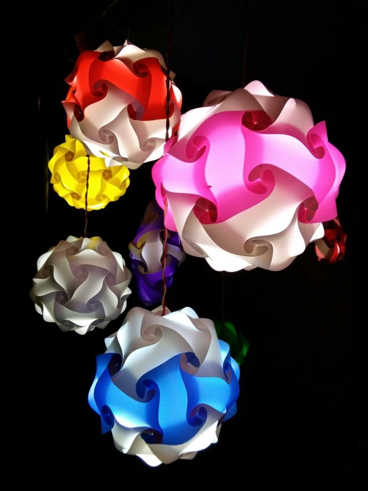
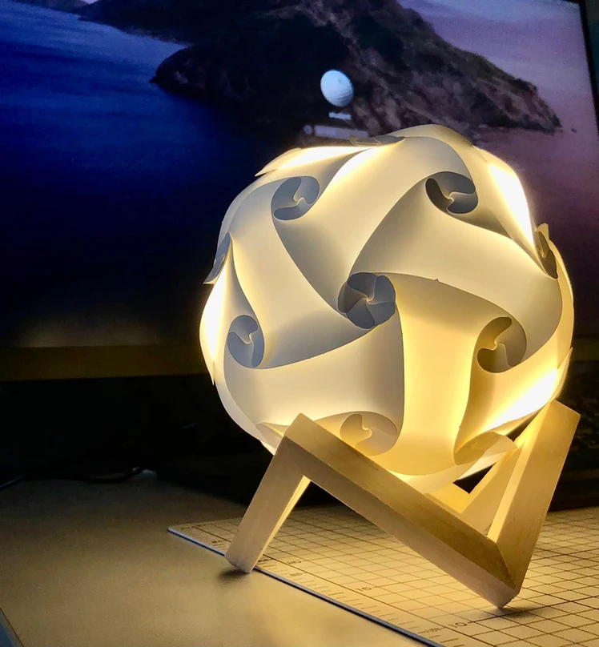
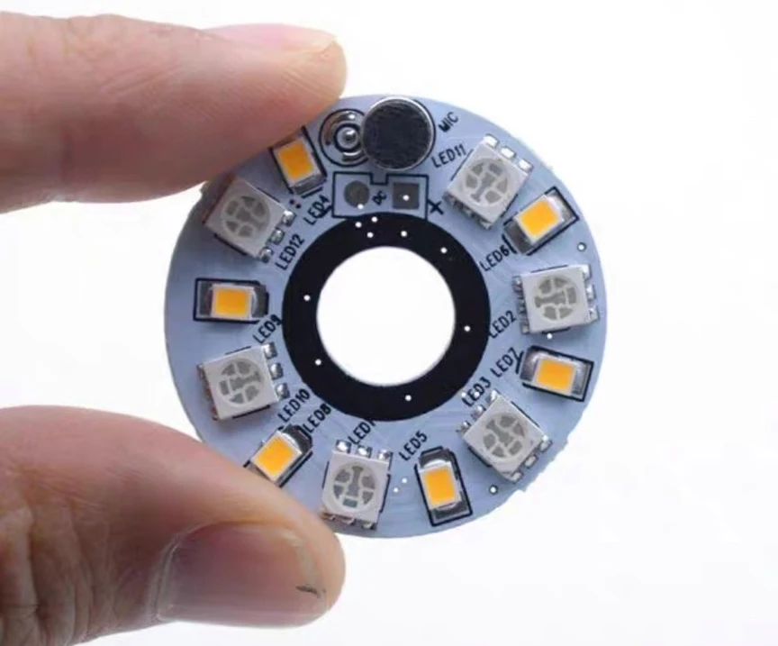
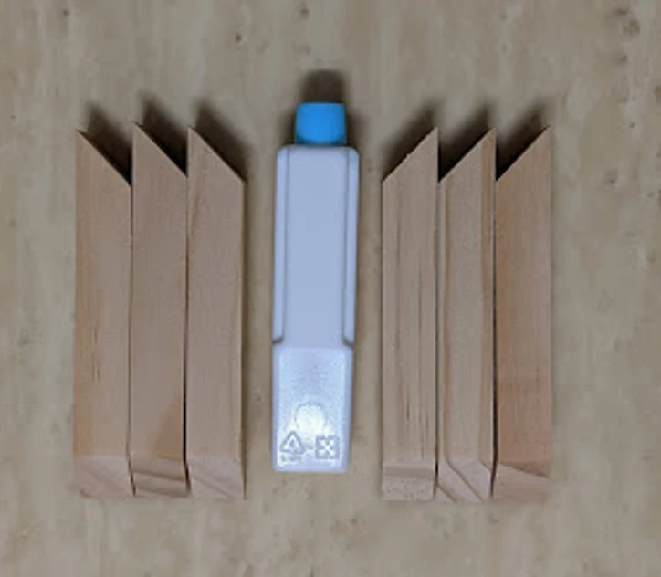

取樣，決定「何時記錄」
每秒記錄的點越多，越能捕捉快速變化。試把頻率調到 8 Hz，再把取樣降到每秒 8 點，觀察遺失了什麼。
Sampling captures a signal at regular moments in time.
一場把聲音變成光的實驗
Small words. Bright ideas.
電腦真的聽得懂你嗎？
從一段聲音，到一個指令，再到親手做的燈。
今天，我們一起讓想法亮起來。
Explore speech recognition, experiment with sound,
and bring a handmade lamp to life.
看得見的原理，摸得到的創意。
Listen. Explore. Make.

今天，你會帶走什麼？ Your discoveries
01 / SOUND EXPLORER
Turn a continuous wave into digital information.
聲音的波形是連續的。電腦先在固定時間點記下數值，再把每個數值放到有限的刻度上。
調整右側滑桿，觀察波形與取樣點。
換你試試看 Make a change
取樣點足夠，可以觀察原本的波形。
圖中以低頻正弦波示意。試聽音高放大 55 倍，取樣率與位元數的影響以圖形呈現。
每秒記錄的點越多，越能捕捉快速變化。試把頻率調到 8 Hz，再把取樣降到每秒 8 點，觀察遺失了什麼。
Sampling captures a signal at regular moments in time.
位元數越多，可用的數值刻度越多。1 bit 只有 2 階，3 bit 有 8 階，6 bit 有 64 階。
More bits provide more levels for describing amplitude.
理想的帶限訊號，要用高於最高頻率兩倍的取樣率，才有機會完整重建。實際系統還會搭配濾波器與設計餘裕。
The Nyquist principle connects frequency and sampling rate.
02 / INSIDE THE LISTENING MACHINE
Follow the journey from sound to action.
點選每一站，看看誰負責聽、誰負責轉成文字、誰又把結果變成動作。
「打開小燈」
Capture the sound.
麥克風把空氣中的振動轉為電訊號，再由類比轉數位電路產生可供電腦處理的數值。
想一想：離麥克風遠一點，聲音訊號可能有什麼變化？
ASR
Automatic Speech Recognition
例如把你說的「開燈」轉寫成「開燈」。口音、噪音和說話方式，都可能影響結果。
NLP
Natural Language Processing
「水溝很難過」和「心裡很難過」，意思不同。語言處理需要利用上下文判斷。
TTS
Text-to-Speech
例如裝置讀出「好的，已開燈」。語音助理可以把這三類技術串在一起。
固定指令的燈盤可能直接把聲音分類成「開燈」或「關燈」，再送出控制訊號。處理流程會隨硬體、模型和功能設計而改變。
A small command device may classify a phrase directly and trigger an action.
03 / SAY IT. SEE IT.
A voice-command playground.
先按按鈕，再試試輸入中英文指令。觀察每個指令如何改變燈光的狀態。
教學模擬燈具 On-screen simulation
Choose a command and watch the response.
先試試「打開小燈」，看看發生什麼事。
部分瀏覽器會把音訊送至語音辨識服務，可能需要網路及麥克風權限。請在同意後啟用，也可以繼續用按鈕或打字操作。
建議先說中文短句。此功能的可用性依瀏覽器與裝置而異。
試試同義詞，觀察系統認得哪些說法。模擬器以預先設定的詞句對應動作，實體燈盤可接受的指令則要查看產品說明。
Different words can express the same intent. Which phrases does this system accept?
瀏覽器語音功能參考 MDN · SpeechRecognition
04 / HANDS ON, LIGHT ON
Build your own voice-controlled IQ lamp.
一塊語音燈盤、一組底座，加上互扣的燈片。
把科技的原理，變成放在桌上的作品。


麥克風接收聲音，控制晶片處理指令，LED 顯示結果。
A microphone, a controller, and LEDs work together.

Sort the left and right pieces.
依原教材整理三左、三右的木條，先乾式排好，確認斜面與接合方向。
原教材使用 PP 聚丙烯燈片。彎曲與互扣的幾何結構讓燈罩成形。裝配時讓燈片保持同一面朝向，觀察三點與五點相交的位置。
Flexible polypropylene pieces form a shade through interlocking geometry.
色溫以 K 表示。較低色溫通常偏黃，較高色溫通常偏藍白。光的色溫、亮度和物體實際溫度，是不同的概念。ENERGY STAR 資料 ↗
Lower color temperatures look warmer. Higher values look cooler.
黏著與接線時先斷電，確認板子額定電壓、正負極與接頭。使用老師提供的低壓電源，讓燈片遠離熱源。黏著劑依產品說明使用。
Check voltage, polarity, and connections before powering the project.
05 / CHECK YOUR DISCOVERIES
Six small questions. A brighter understanding.
做完實驗，再來六題小挑戰。
每題都有說明，答錯也可以找到新線索。
題目與作答狀態只在這個頁面中使用。
KEEP EXPLORING
A question is a good place to start.
選一個固定指令，分別在安靜、較吵、距離較遠的情況下，各做 5 次測試。記錄「辨識出什麼」「有沒有完成動作」，再比較條件的影響。
一次只改一個條件。單次成功只能說明這次完成任務，多次比較才有助於理解表現。尊重每位同學的口音與說話方式。
Change one condition at a time and compare repeated trials.
可依器材與學生節奏拆成多節課。學生可以用口說、打字、按鈕或畫流程圖表達理解。
照片、語音燈盤指令與 IQ 燈實作內容，整理自林雲龍老師《語音辨識好好玩》中英雙語簡報。網站補充數位聲音、語言技術分工與實驗設計。模擬器呈現教學情境，實體設備功能依產品規格。